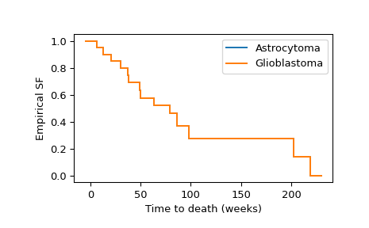

The logrank test [1] compares the observed number of events to
the expected number of events under the null hypothesis that the two
samples were drawn from the same distribution. The statistic is
\(i\) denotes the group (i.e. it may assume values \(x\) or
\(y\), or it may be omitted to refer to the combined sample)
\(j\) denotes the time (at which an event occurred),
\(N\) is the number of subjects at risk just before an event occurred,
and \(O\) is the observed number of events at that time.
The statistic\(Z_x\) returned by logrank is the (signed) square
root of the statistic returned by many other implementations. Under the
null hypothesis, \(Z_x**2\) is asymptotically distributed according to
the chi-squared distribution with one degree of freedom. Consequently,
\(Z_x\) is asymptotically distributed according to the standard normal
distribution. The advantage of using \(Z_x\) is that the sign
information (i.e. whether the observed number of events tends to be less
than or greater than the number expected under the null hypothesis) is
preserved, allowing scipy.stats.logrank to offer one-sided alternative
hypotheses.
Mantel N. “Evaluation of survival data and two new rank order
statistics arising in its consideration.”
Cancer Chemotherapy Reports, 50(3):163-170, PMID: 5910392, 1966
Brown, Mark. “On the choice of variance for the log rank test.”
Biometrika 71.1 (1984): 65-74.
[5]
Klein, John P., and Melvin L. Moeschberger. Survival analysis:
techniques for censored and truncated data. Vol. 1230. New York:
Springer, 2003.
Examples
Reference [2] compared the survival times of patients with two different
types of recurrent malignant gliomas. The samples below record the time
(number of weeks) for which each patient participated in the study. The
scipy.stats.CensoredData class is used because the data is
right-censored: the uncensored observations correspond with observed deaths
whereas the censored observations correspond with the patient leaving the
study for another reason.
We can calculate and visualize the empirical survival functions
of both groups as follows.
>>> importnumpyasnp>>> importmatplotlib.pyplotasplt>>> ax=plt.subplot()>>> ecdf_x=stats.ecdf(x)>>> ecdf_x.sf.plot(ax,label='Astrocytoma')>>> ecdf_y=stats.ecdf(y)>>> ecdf_x.sf.plot(ax,label='Glioblastoma')>>> ax.set_xlabel('Time to death (weeks)')>>> ax.set_ylabel('Empirical SF')>>> plt.legend()>>> plt.show()

Visual inspection of the empirical survival functions suggests that the
survival times tend to be different between the two groups. To formally
assess whether the difference is significant at the 1% level, we use the
logrank test.
The p-value is less than 1%, so we can consider the data to be evidence
against the null hypothesis in favor of the alternative that there is a
difference between the two survival functions.